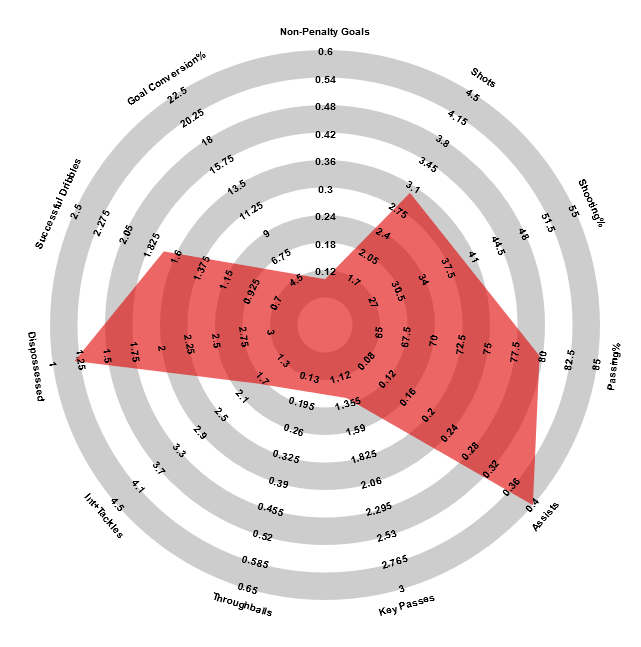
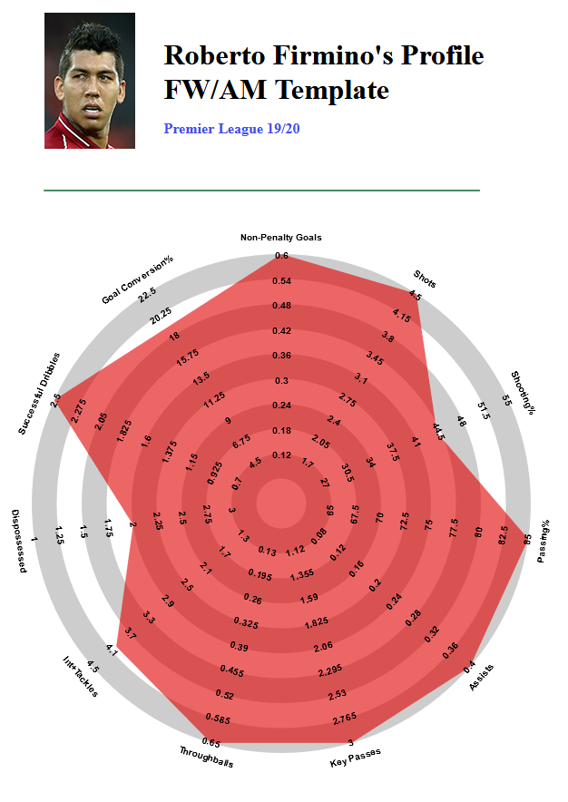

What is it?
Script generating Football radars (like below) based on whoscored data.

How does it work?
Collects data from whoscored and draws radar based on additional calculations
What does it look like
Simply you get full player profile and his radar

How to use it?
Simply copy the script and run it on player's whoscored page. Then wait approx. 0.5 min and you'll be redirected to resolver page